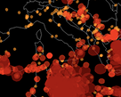
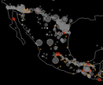
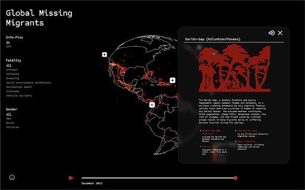
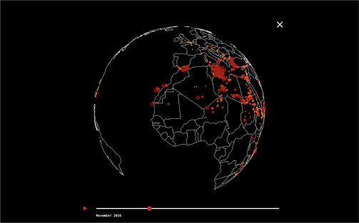
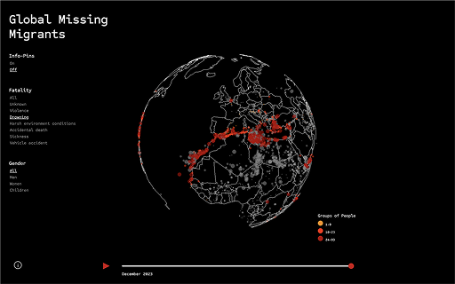

Globe Overview The 3D globe view displays all incidents with pins. A filter panel on the left lets users sort by fatality type and gender. Red dots scale in size and brightness to show intensity.
Global Missing Migrants
2014 - 2023
Introduction
An interactive 3D globe that visualizes global migration routes, risk zones, and key patterns—bringing human stories behind the statistics to the surface.
We worked with the Missing Migrants dataset to uncover patterns in global migration crises. Some visuals confirmed our assumptions—others challenged them. Mapping the data onto a globe revealed surprising, often overlooked narratives. To build the experience, we used Three.js with HTML, CSS, and vanilla JavaScript. Users can filter incidents by cause of death or gender. We also added AI voiceovers (via Envato) to narrate key facts, adding an emotional and immersive layer. All visuals and interactions were custom-designed to ensure a cohesive, engaging experience that transforms raw data into meaningful insight.
Color Mapping & Representation
We used a clear color system to distinguish data points: Gray marks inactive or unselected states. Active incidents are shown using a color gradient and varying dot sizes to convey severity and impact.


Visualisation
Screens
Infocard Expandable info cards give detailed context about each event. An integrated speaker button plays an AI-generated voice reading the text aloud.

Time Slider Users can slide through time to track how incidents occurred across different periods—adding a temporal layer to the spatial data.

Filter Options Selected filters highlight relevant incidents, dimming the rest in gray. Pin visibility can be toggled for a cleaner view when exploring specific data layers.

Reflections & Insights This project was a deep dive into both the technical side of 3D visualization and the responsibility that comes with working on real-world data. Building with Three.js sharpened our skills in interactive design, while engaging with the dataset taught us how to extract and communicate meaningful insights. Using the globe and time slider, we uncovered migration hotspots like the Mexican border, the Darién Gap, and the Mediterranean Sea—regions where risk and tragedy converge. Some patterns aligned with what we expected; others surprised us and shifted our understanding. More than anything, this project reminded us that behind every data point is a human story. It reinforced the importance of visibility, empathy, and design's role in raising awareness around urgent global issues like forced migration.